Grand Temple de l'Église Réformée
La mécanique.
La mécanique |
|
|
La mécanique |
|
|
Le tirage des registres de cet instrument est de type mécanique ; la rupture des jeux coupés en basses et dessus se fait entre B 2 et C 3. Chaque tirant de la console aboutit à un tournant, lui même relié à un renvoi branché sur un sabre faisant office de balancier. Chaque extrémité supérieure des sabres est reliée directement à une tête de registre.
- Course moyenne des tirants de registre à la console : 80 mm.
- Course des registres aux sommiers de Grand Orgue : 35 mm.
- Course des registres aux sommiers de Pédale : 45 mm.
Dimensions des renvois
| Sommier côté C. | Sommier côté C#. | ||||
|---|---|---|---|---|---|
| 1) | Montre 8' | 1812 × 35 × 27 | 8) | Flûte 4' (D) | 1635 × 30 × 27 |
| 2) | Prestant 4' | 1628 × 35 × 27 | 9) | Flûte 4' (B) | 1804 × 38 × 27 |
| 3) | Fourniture III-V | 1801 × 37 × 28 | 10) | Bourdon 8' (D) | 1642 × 37 × 28 |
| 4) | Cornet IV | 1602 × 35 × 28 | 11) | Bourdon 8' (B) | 1807 × 34 × 28 |
| 5) | Euphone 8' (B) | 1632 × 34 × 28 | 12) | Flûte 8' (D) | 1268 × 29 × 28 |
| 6) | Euphone 8' (D) | 1247 × 30 × 28 | 13) | Flûte 8' (D') | 587 × 30 × 30 |
| 7) | Euphone 8' (D) | 603 × 30 × 30 | 14) | Flûte 8' (B) | 1633 × 37 × 29 |
- Le renvoi no 1 est muni d'une entaille.
- Le renvoi no 7 est muni d'une jambe de chien.
| Sommier côté C. | Sommier côté C#. | ||||
|---|---|---|---|---|---|
| 1) | Bourdon 16' | 1625 × 38 × 27 | 2) | Principal 8' (D) | 1634 × 39 × 27 |
Dimensions des têtes de registres et des enfourchements
Les têtes de registres sont collées sur les règles. De plus, une pièce en fer forgé en U (diamètre 6 mm.) est vissée sur chacune d'entre-elles et permet l'articulation avec les têtes des sabres de tirage (voir photo). Deux goupilles maintiennent les règles des registres aux enfourchements ; il y a donc quatre goupilles par enfourchement.
Les registres des basses des jeux coupés n'ont pas d'enfourchement mais une sur-épaisseur de bois (chêne) sur le registre lui même.
|
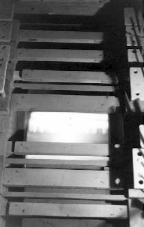 Enfourchements |
Enfourchements centraux et tête de registre du Grand Orgue |
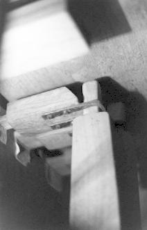 Tête de registre |
| Sommier côté C. | Enfourchements centraux. | Sommier côté C#. | |
|---|---|---|---|
| Montre 8' | 110 × 45 × 30 | 425 × 45 × 30 | 155 × 43 × 30 |
| Prestant 4' | 110 × 47 × 30 | 425 × 46 × 30 | 145 × 45 × 30 |
| Flûte 4' (D) | - | 425 × 42 × 30 | 110 × 50 × 30 |
| Flûte 4' (B) | 128 × 42 × 30 | 425 × 20 × 16 | 110 × 40 × 30 |
| Fourniture III-V | 110 × 65 × 30 | 425 × 65 × 30 | 140 × 65 × 30 |
| Bourdon 8' (D) | - | 425 × 45 × 30 | 107 × 50 × 30 |
| Bourdon 8' (B) | 127 × 48 × 30 | 425 × 20 × 20 | 107 × 50 × 30 |
| Cornet IV | 115 × 68 × 30 | 425 × 65 × 30 | 137 × 67 × 30 |
| Flûte 8' (B) | 132 × 50 × 30 | 425 × 18 × 20 | 107 × 50 × 30 |
| Flûte 8' (D) | - | 425 × 45 × 30 | 105 × 50 × 30 |
| Euphone 8' (B) | 107 × 49 × 30 | 425 × 20 × 18 | 130 × 50 × 30 |
| Euphone 8' (D) | 110 × 49 × 30 | 425 × 45 × 30 | - |
| Sommier côté C. | Enfourchements centraux. | Sommier côté C#. | |
|---|---|---|---|
| Bourdon 16' | 150 × 58 × 30 | 1040 × 32 × 55 | 105 × 59 × 30 |
| Principal 8' | 105 × 58 × 30 | 1045 × 32 × 55 | 150 × 59 × 30 |
Les sabres
Tous les sabres du Grand Orgue sont en hêtre excepté celui du dessus du jeu de Trompette de huit pieds qui est en chêne. Tous les sabres de la Pédale sont en chêne. Leur épaisseur est partout de 20 mm.
Le tirage du registre s'effectue à 40 mm. du haut du sabre au Grand Orgue et à 45 mm. à la Pédale.
|
Sabres côté têtes de registres |
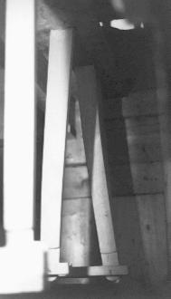
Sabres côté renvois |
|
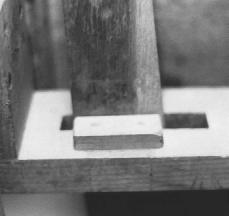 Axe d'un sabre |
| 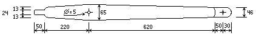 | Sabre du sommier de Grand-Orgue |
 |
Sabre du sommier de Pédale |
Articulation d'un sabre, côté renvois
Dimensions des planches de soutien des axes de sabres
| Grand Orgue (côté C) : | 1245 × 197 × 25 ; | chêne |
|---|---|---|
| Pédale (côté C) : | 385 × 100 × 35 : | sapin. |
Les tournants
Les bras des tournants sont en fer forgé sertis à chaud dans les tournants. Chaque bras traverse donc le tournant auquel il appartient de part en part. Le travail est d'inspiration très classique. Chaque bras possède deux trous (3.5 mm.) ; à une ou deux exceptions près, tant du côté du tirant de registre de la console que de celui du renvoi, le trou utilisé pour poser la goupille axiale est celui le plus éloigné de l'axe du tournant. L'épaisseur du métal des bras diminue de 10 à 4 mm. sur un même bras.
|
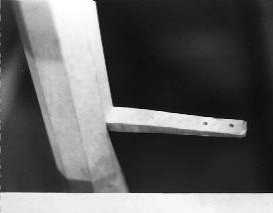 Renvoi retiré |
|
||
|
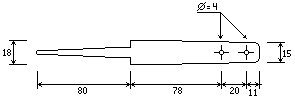
Vue de dessus d'un bras de |
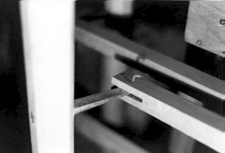 Renvoi en place |
|
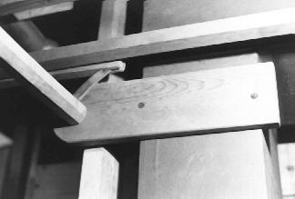 Support du tournant horizontal, côté C |
Les tournants sont en hêtre ; il mesurent tous 1420 mm. de long à l'exception de ceux de la Pédale qui ont dû être changés lors de la restauration de 1992 à cause du tirage des jeux du Récit. Cependant, les bras ont été conservés |
|
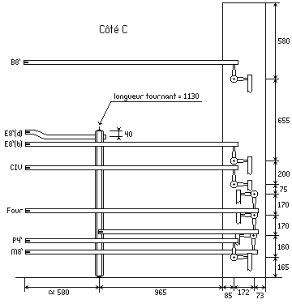 Vue de dessus de la mécanique des registres Côté C (avant restauration) |
|
|
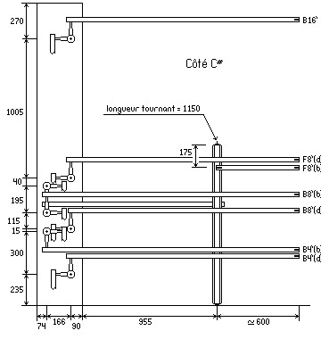 Vue de dessus de la mécanique des registres Côté C# (avant restauration). |
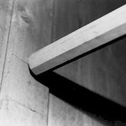 Tournant horizontal |
|
On voit clairement une des deux barres de renfort en fer forgé posée diagonalement. Celle-ci est vissée d'un côté sur la planche de support des tournants (en hêtre) et de l'autre sur le buffet ; c'est également elle qui, dans son prolongement maintient le positif postiche. Le diamètre de ces barres de renfort est de 14 mm. Pour plus de clarté, les tournants ne sont pas dessinés. |
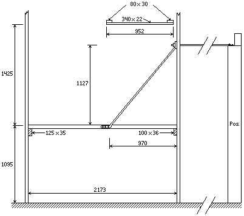 Traverses et montants soutenant les tournants de registres. |